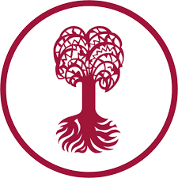

2026
Computer Vision · Generative Models · Remote Sensing
About Me
I am a research engineer at SIA Co., Ltd., serving as technical research personnel for military service since February 2026. I am currently on leave from the Ph.D. program at the Artificial Intelligence Graduate School, UNIST, where I work with the Laboratory of Advanced Imaging Technology under Prof. Jaejun Yoo.
My research focuses on computer vision and generative models, especially remote sensing representation learning, video generation evaluation, content-aware layout generation, image editing, and efficient visual restoration. I received my M.S. in Artificial Intelligence from UNIST in 2025 and my B.S. in Computer Science and Engineering from UNIST in 2023.
Research Interests
- Computer Vision: image editing, layout generation, visual restoration, and evaluation.
- Remote Sensing: SAR-EO paired data, multi-modal foundation models, and representation learning.
- Generative Models: diffusion models, content-aware generation, and video generation evaluation.
- Efficient Learning: super-resolution, lottery tickets, and continual learning for personalized models.
News
- SIA Co., Ltd. Research Engineer, technical research personnel for military service.
- SEORATION: Curating SAR-EO Paired Data for Multi-Modal Remote Sensing Foundation Models.
- UNIST AIGS Ph.D. program, LAIT.
- IPIU 2025 "Diffusion Model-Based Style-Consistent Scene Text Editing" poster presentation.
- ECCV 2024 "PosterLlama" poster presentation.
- CVPR 2024 GDUG "PosterLlama" spotlight presentation.
- 2024 AI Technology Open Workshop "STREAM" Best Poster Award.
- Research internship at Eberhard Karls Universität Tübingen, STAI.
Publications
Google ScholarECCV
PosterLlama: Bridging Design Ability of Language Model to Content-Aware Layout Generation
arXivICLR
IPIU
Diffusion Model-Based Style-Consistent Scene Text Editing
KSC
EP-SRCNN: Strong Lottery Ticket in Super-Resolution
Experience
Research Engineer, SIA Co., Ltd.
Working on remote sensing representation learning and multi-modal foundation model research.
Ph.D. Researcher, UNIST AIGS
M.S. Researcher, UNIST AIGS
Teaching assistant for UNIST-LG Electronics DX Intensive Course, Introduction of Generative Models.
Lecture Production Assistant, Upstage AI 7th Cohort
Assisted production of the CV Recent Trends lecture led by Prof. Jaejun Yoo.

Research Intern, Eberhard Karls Universität Tübingen
AI Engineer, Tripbuilder
Built travel preference analysis and recommendation algorithms for smart tourism services.
Education
UNIST AIGS, Ph.D. in Artificial Intelligence
Mar. 2025 - Present · Currently on leave · Laboratory of Advanced Imaging Technology
UNIST AIGS, M.S. in Artificial Intelligence
Mar. 2023 - Feb. 2025 · Laboratory of Advanced Imaging Technology
UNIST CSE, B.S. in Computer Science and Engineering
Mar. 2019 - Feb. 2023
Sejong Science High School
Mar. 2016 - Feb. 2019
Research & Project Experience
Remote Sensing Representation Learning
Studying representation learning for remote sensing foundation models, including SAR-EO paired data curation and multi-modal remote sensing data understanding.
Layout Generation
Developed PosterLlama, a content-aware layout generation approach that reformats visual layouts as HTML and leverages language-model design knowledge.
Video Evaluation
Proposed STREAM to evaluate spatial and temporal aspects of generated videos independently and support model diagnosis beyond short fixed-length clips.
Scene-Text Generation
Studied layout-free scene-text generation and editing for diffusion models that struggle to render accurate synthetic text.
Efficient Super-Resolution
Explored strong lottery tickets inside super-resolution networks to identify efficient models for resource-constrained devices.
Multi-Concept Continual Learning
Investigated LoRA-based personalization for diffusion models to reduce catastrophic forgetting across sequential concept learning.
AI Data & Vision Systems
Participated in projects on action recognition, pet biometric recognition, gas leak segmentation, non-destructive signal restoration, and panoramic vessel vision.
Awards & Honors
Gold Best Paper Award, IPIU 2024
Quantitative evaluation model for spatio-temporal aspects of video generation models.
Best Poster Award, 2024 AI Technology Open Workshop
STREAM: Spatio-TempoRal Evaluation and Analysis Metric for Video Generative Models.
UNIST AIGS Scholarships
M.S. scholarship, Ph.D. national scholarship, and selected overseas internship support.